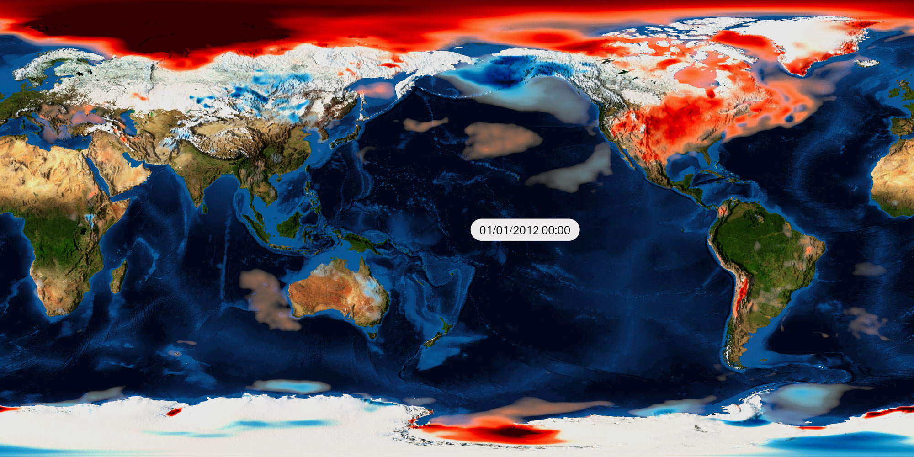

This page contains the blender templates to use in combination with the batch script. You can contact us if you have an interesting and replicable scene to visualize a particular data type and you would like to share it.
s.imboden@cineca.it
lorenzo.celli00@gmail.com
Presets
Download the batch script
Below you can download the batch script to automatically create animations via the terminal.
The batch.zip folder contains three files, among which BVTK.sh, that is the shell script to run.
Don't forget to run 'chmod +x' both on BVTK.sh and BVTK.config. If you have troubles with the
linux interpreter you may try to rewrite the script with nano.
NetCDF presets

Transparent background with date

A simple preset to display your data above a blue marble picture, with overlapping shadows to enhance the altitude.
By default the invisible values are those between the 40% and the 60% of your range; for example with a range going from 0 to 10, values between 4 and 6 will be invisible, as shown in the palette below, and
will expose the underlying Earth picture.